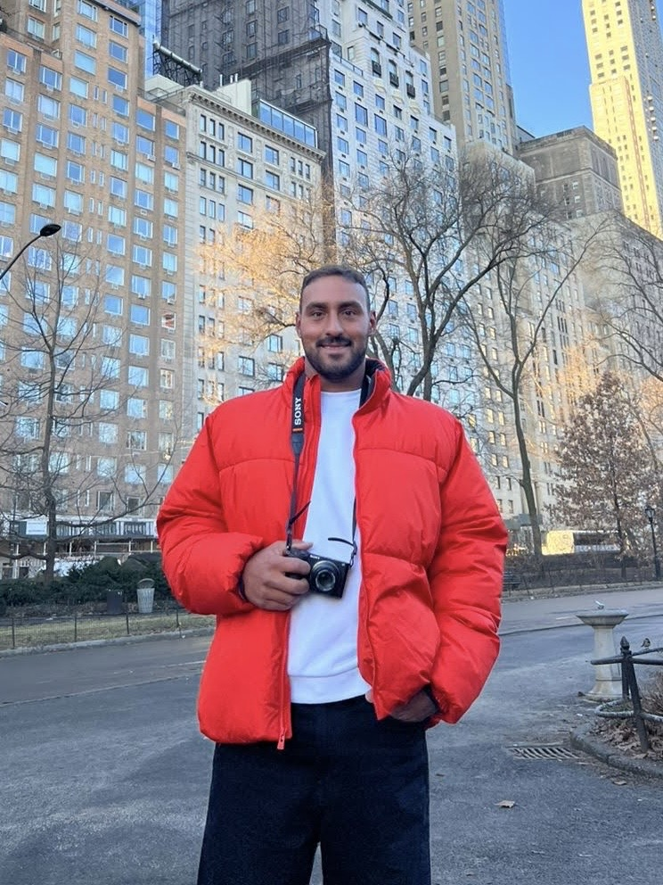

SOBRE MI

¡Hola! Me llamo Agustín Lopez y desde muy joven me interesó cómo funcionan los sistemas...
Finalicé mis estudios en Tecnicatura Universitaria en Programación en la Universidad CAECE y actualmente curso la Licenciatura en Gestión de Tecnología de la Información en UADE.
Me apasiona resolver problemas, automatizar procesos y optimizar la gestión de datos usando SQL, Node.js, AppScript y más. 🚀
Además, en mi tiempo libre hago surf 🏄🏽♂️ , snowboard 🏂 y fotografia 📸.